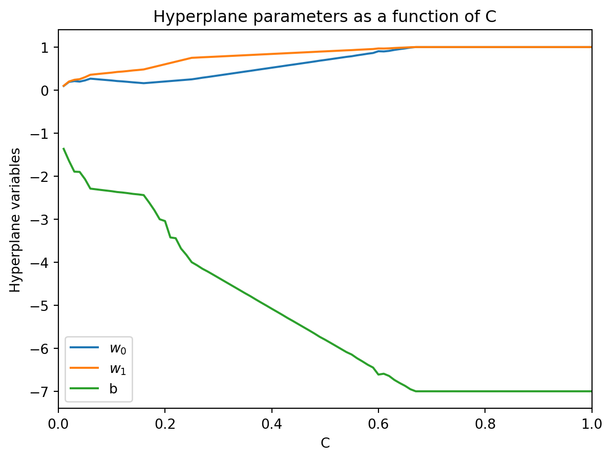

import numpy as np
import matplotlib.pyplot as plt
import scipy.optimize as optimize
# Display numerical values in NumPy arrays only up to three decimals,
# and suppress scientific notation
np.set_printoptions(precision=3, suppress=True)Solutions Lecture 9 (Section 10.3 and Chapter 11)
Make sure to import Numpy, Matplotlib and SciPy to be able to complete all the exercises.
Question 1
In this exercise we will implement the optimization problem
\begin{array}{ll}
\displaystyle \min_{w_0,\dots,w_{d-1},b} & \displaystyle \sum_{i=0}^{d-1} w_i^2 \\
\text{s.t.} & \displaystyle y_i(w^Tx_i + b) \geq 1 \ \ \forall i \in \{0,\dots,m-1\}
\end{array}
using the minimize() function from SciPy’s optimize module.
For a general linear system of inequalities with variables z = [z_0,\dots,z_{n-1}], and input data r = [r_0,\dots,r_{m-1}] and matrix A \in \mathbb{R}^{m \times n}, you can add the system of linear inequalities
\sum_{j} a_{ij}z_j \geq r_i \ \ \text{for}\ i = 0,\dots,m-1
using constraints=optimize.LinearConstraint(A,lb=r) as keyword argument in minimize(). See the documentation here.
- Write a function
constrwhich takes as input a matrix X \in \mathbb{R}^{m \times d} whose rows respresent m historical data points x_i \in \mathbb{R}^d, and a one-dimensional array y = [y_0,\dots,y_{m-1}] \in \{-1,1\}^m representing the labels of the data.
The function should return the constraint matrix A and the lower bound array r that model the inequality constraints y_i(w^Tx_i + b) \geq 1 for i \in \{0,\dots,m-1\} with the interpretation that z = [w_0,\dots,w_{d-1},b].
def constr(X,y):
m, d = np.shape(X)
A = np.hstack((X,np.ones((m,1))))*y[:,None]
r = np.ones(m)
return A, rTest your function on the input below.
# Historical data
X = np.array([[3,3],[1.5,2.5],[1,2],[0.5,1.5],[2,2],[2,4],
[4,4],[2,6],[5,5.5],[7,6]]) # Data points
y = np.array([-1,-1,-1,-1,-1,-1,
1,1,1,1]) # Labels
A, r = constr(X,y)
print("Constraint matrix A:\n",A)
print("Lower bound array r:\n",r)Constraint matrix A:
[[-3. -3. -1. ]
[-1.5 -2.5 -1. ]
[-1. -2. -1. ]
[-0.5 -1.5 -1. ]
[-2. -2. -1. ]
[-2. -4. -1. ]
[ 4. 4. 1. ]
[ 2. 6. 1. ]
[ 5. 5.5 1. ]
[ 7. 6. 1. ]]
Lower bound array r:
[1. 1. 1. 1. 1. 1. 1. 1. 1. 1.]- Write a function
separate()which takes as input a matrix X \in \mathbb{R}^{m \times d} whose rows respresent m historical data points x_i \in \mathbb{R}^d, and a one-dimensional array y = [y_0,\dots,y_{m-1}] \in \{-1,1\}^m representing the labels of the data.
It should output the solution to the minimization problem above, as an array z = [w_0,\dots,w_{d-1},b], usingminimize()with initial guess for w the average of all rows in X and b = 0. Use your function in part a) to add the linear constraints in the keyword argumentconstraints.
import scipy.optimize as optimize
def objective(z):
d = np.size(z) - 1
return np.sum(z[0:d]**2)
def separate(X,y):
A, r = constr(X,y)
guess = np.hstack((np.mean(X,axis=0),np.array([0])))
result = optimize.minimize(objective,x0=guess,
constraints=optimize.LinearConstraint(A,lb=r))
return result.xTest your function on X and y as in part a).
print(separate(X,y))[ 1. 1. -7.]Question 2
In this exercise we will implement the optimization problem
\min_{w_0,\dots,w_{d-1}, b} \frac{1}{2} \sum_{i=0}^{d-1} w_i^2 + C \sum_{i=0}^{m-1} \max(0, 1 - y_i (w^T x_i + b)).
using the minimize() function from SciPy’s optimize module.
- Write a function
separate_C()which takes as input a matrix X \in \mathbb{R}^{m \times d} whose rows respresent m historical data points x_i \in \mathbb{R}^d, a one-dimensional array y = [y_0,\dots,y_{m-1}] \in \{-1,1\}^m representing the labels of the data, and a number C \in \mathbb{R}_{>0}.
It should return the solution to the minimization problem above, as an array z = [w_0,\dots,w_{d-1},b], usingminimize()with initial guess for w the average of all rows in X (similar as in the previous exercise) and b = 1, and the'Nelder-Mead'method.
Hint: The functionnp.maximum()might be handy in your solution.
def objective(z,X,y,C):
d = np.size(z) - 1
w = z[0:d]
# First term in objective
term1 = (1/2)*np.sum(w**2)
# Second term in objective
term2 = np.sum(np.maximum(0,(1 - y*((X @ w) + z[d]))))
return term1 + C*term2
def separate_C(X,y,C):
m, d = np.shape(X)
guess = np.hstack((np.mean(X,axis=0),np.array([1])))
result = optimize.minimize(objective,x0=guess,
args=(X,y,C),method='Nelder-Mead')
return result.x Test your function with the matrix X and y from Question 1, and C = 0.3.
# Historical data
X = np.array([[3,3],[1.5,2.5],[1,2],[0.5,1.5],[2,2],[2,4],
[4,4],[2,6],[5,5.5],[7,6]]) # Data points
y = np.array([-1,-1,-1,-1,-1,-1,
1,1,1,1]) # Labels
# Parameter C
C = 0.3
print(separate_C(X,y,C))[ 0.34 0.78 -4.36]- Execute your function in part a) for values C \in \{0.01,0.2,\dots,1\} on the same data as in part a) and plot the values of w_0 = w_0(C), w_1 = w_1(C) and b = b(C) in a figure with C on the x-axis and the values of the three variables on the y-axis. You may use a for-loop.
Your figure should look roughly like this. Note that the coefficiens w_0,w_1 converge to 1, and b to -7. This was indeed the solution found in Question 1.
# Values of C
C = np.arange(0.01,1.01,0.01)
# Input size
m, d = np.shape(X)
hyperplane = np.zeros((np.size(C),d+1))
count = 0
for c in C:
hyperplane[count] = separate_C(X,y,c)
count += 1
# Create figure()
plt.figure
# Set x-axis range
plt.xlim(0,np.max(C))
# Set x-axis label
plt.xlabel('C')
plt.ylabel('Hyperplane variables')
# Plot the three lines
labels = ['$w_0$', '$w_1$', 'b']
for i in range(d+1):
plt.plot(C,hyperplane[:,i],label=labels[i])
# Create legend
plt.legend()
# Create title
plt.title("Hyperplane parameters as a function of C")
# Show plot
plt.show()
Question 3
Write a function sum_k that takes as input two numbers k and n. It should return the integer points x = [x_0,\dots,x_{n-1}] \in \{0,1,2,\dots,k\}^n for which \sum_{i=0}^{n-1} x_i = k. You may return the integer points as you like (in a list, array, or tuple) and use a for-loop.
import itertools
def sum_k(k,n):
a = np.arange(0,k+1)
sum_equals_k = []
for p in itertools.product(a, repeat=n):
if(np.sum(p) == k):
sum_equals_k.append(p)
return sum_equals_k Your function should give the following output on the input below.
k = 5
n = 3
# Integer points returned as tuples
print(sum_k(k,n))[(0, 0, 5), (0, 1, 4), (0, 2, 3), (0, 3, 2), (0, 4, 1), (0, 5, 0), (1, 0, 4), (1, 1, 3), (1, 2, 2), (1, 3, 1), (1, 4, 0), (2, 0, 3), (2, 1, 2), (2, 2, 1), (2, 3, 0), (3, 0, 2), (3, 1, 1), (3, 2, 0), (4, 0, 1), (4, 1, 0), (5, 0, 0)]